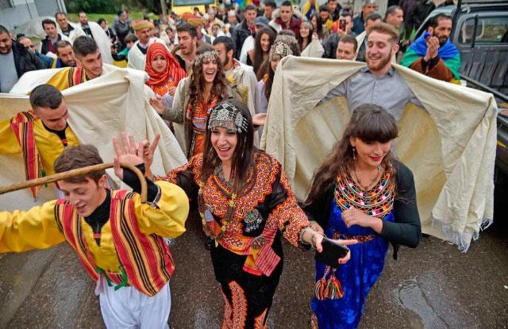

From ancient Roman ruins to traditional Kabyle crafts, Algeria is a treasure trove of history and heritage.
Explore Algeria’s diverse heritage, including UNESCO sites, ancient cities, and vibrant cultural festivals.

Ancient Roman ruins on the Mediterranean coast, reflecting Algeria’s long and fascinating history.

Handmade pottery, carpets, and jewelry from the Kabylie region — a glimpse into traditional life.

Colorful festivals celebrating music, dance, and local cuisine across Algeria.